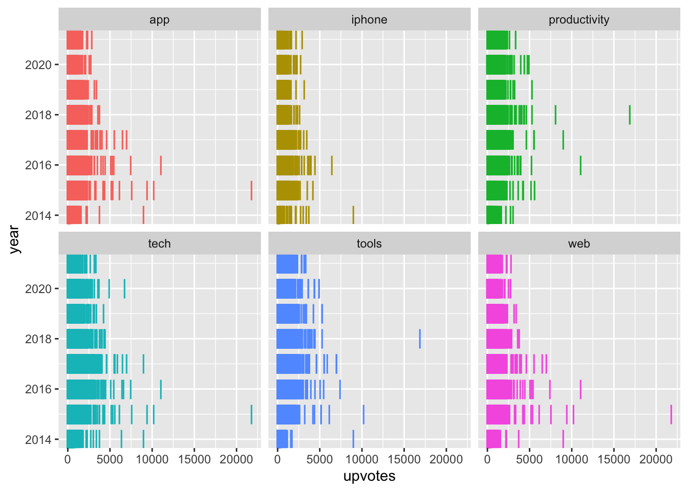

Product Hunt
The Data
The data this week comes from components.one by way of Data is Plural.
For “The Gamer and the Nihilist,” an essay in Components, Andrew Thompson and collaborators created a dataset of 76,000+ tech products on Product Hunt, a popular social network for launching and promoting such things. The dataset includes the name, description, launch date, upvote count, and other details for every product from 2014 to 2021 in the platform’s sitemap. (“Based on experience, not every product that appears on Product Hunt seems to appear on the sitemap,” the authors caution.)
product <- read_csv("product_hunt.csv") |>
mutate(year = lubridate::year(release_date))product_categ <- product |>
select(id, year, upvotes, category_tags) |>
drop_na(category_tags) |>
#mutate(category_tags = str_replace_all(category_tags, "\\[", "")) |>
#mutate(category_tags = str_replace_all(category_tags, "\\]", "")) |>
#mutate(category_tags = str_replace_all(category_tags, "'", "")) |>
tidytext::unnest_tokens(word, category_tags)I’d like to use only the most common category tags. I don’t know how to filter out the most common categories in a tidy pipeline, so I’ll create a list of common categories.
common_categ <- product_categ |>
group_by(word) |>
summarize(counter = n()) |>
slice_max(counter, n = 6) |>
select(word)product_categ |>
right_join(common_categ, by = c("word")) |>
ggplot(aes(x = upvotes, y = year, color = word)) +
geom_point(shape = "|", size = 5) +
facet_wrap(~word, ncol = 3) +
theme(legend.position="none")
I don’t know anything about Product Hunt, but the graph above gives the top 6 categories and how their upvoting changes over time.